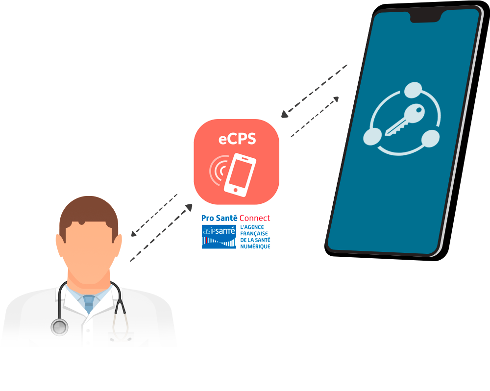
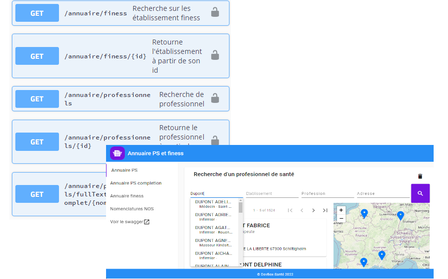

La boîte à outils des intégrateurs et éditeurs de santé
Vous voulez :
- Alimenter/consulter le DMP
- Envoyer/recevoir des messages via la MSSanté
- Rechercher/vérifier l’INS (Identité National de Santé)
- Rechercher des professionnels ou des structures de santé
- Lire des cartes vitales
- Sécuriser vos échanges via des cartes CPS
- Authentifier les patients via l’application Carte Vitale
La DevBox-santé rassemble tous ces outils.
Vous voulez :
- Intégrer rapidement les services socles du SÉGUR
- Obtenir des agréments auprès du CNDA pour ces téléservices
- Définir une architecture adaptée à votre contexte
- Maitriser les coûts de développement
L’expertise des développeurs de la DevBox-santé est à votre service.
DMP
Le connecteur qui simplifie la connexion au DMP service socle de Mon Espace SantéLa DevBox-Santé DMP est un connecteur EAI homologué par le CNDA qui s’interface avec le DMP.
Elle prend en charge la complexité de l’intégration et facilite ainsi aux éditeurs de logiciel de santé l’intéropérabilité avec le DMP en vous fournissant une API simple à utiliser.
Différentes manières de s'authentifier
Authentification directe en utilisant la CPS/CPE
Authentification indirecte en utilisant un certificat serveur.
Authentification directe avec CPS agent.
Authentification directe Olaqin TAAS Stellair
Deux profils fonctionnels :
- Alimentation DMP.
- Consultation DMP.
Nos garanties :
- Ce connecteur est homologué DMP v2.6 par le CNDA
 .
. - Nous permettons de tester gratuitement cette API afin de valider votre choix.
- Plusieurs éditeurs utilisent déjà ce connecteur pour leur logiciel de santé et ceci depuis 2013 .
MS Santé
Le connecteur de la messagerie santé réservée aux professionnels de santéDeux intégrations :
- Une intégration avec Mailiz
- Une intégration avec Apicrypt V2 (en cours de développement)
Téléservice INSi
Le connecteur d'accès à l'Identité National de SantéTrois opérations possibles :
- Recherche par carte vitale
- Recherche sans carte vitale
- Vérification INS (simple et de masse)
Deux modes d'authentification :
- L’authentification par carte CPS/CPE
- L’authentification par certificat établissement.
Lecture carte CPS / CPx
La lecture d’une carte CPS grâce à de simples requêtes REST/JSONUne API Java ou REST, permet d’accéder à l’ensemble des possibilités de la carte CPS3. Notamment :
- authentifier un utilisateur
- signer
- gérer les différents lecteurs de carte et cartes disponibles
- …
Mobilité e-CPS / Pro Santé Connect
Mise en œuvre de Pro Santé Connect au travers de nos/vos solutions.

Après des expérimentations réussies, nous mettons en œuvre ProSantéConnect au sein de nos solutions SAAS. Notre valeur ajoutée :
- Expertise dans la mise en œuvre de solution d’authentifiation basée sur ProSantéConnect
- Prise en compte des possibilités de la e-CPS et de Pro Santé Connect pour les accès aux différents téléservices supportés par la DevBox-Santé
Lecture carte vitale
La lecture d’une carte Vitale grâce à de simples requêtes REST/JSONQuelles informations sont disponibles ?
- En l’absence de carte CPS :
accès aux informations administratives et d’ouverture de droits
concernant l’assuré et les ayants droit qui lui sont rattachés.
Cela permet notamment d’identifier l’assuré en vue d’accéder aux Téléservices intégrés de l’Assurance Maladie. - En utilisant une carte CPS :
accès à la totalité des informations, notamment celles liées au taux de couverture de l’assuré au regard de l’Assurance Maladie.
Quels lecteurs sont supportés ?
- lecteurs mono-fentes (avec 2 ou 1 seul lecteur en mode flip-flop)
- lecteurs bi-fentes
Mobilité ApCV
Intégrer facilement le téléservice d'authentification ApCVL’offre mobilité ApCV de la DevBox-santé comprend :
- Le module de lecture NFC
- Le module de lecture du QRCode
- le client d’appel au téléservice d’authentification
Annuaire Santé
L’Annuaire géolocalisé des professionnels et structures de santé

La DevBox annuaire santé est un service qui permet :
- la recherche multicritères d’un professionnel de santé (par son nom, sa spécialité, son adresse, sa géolocalisation, …).
- la recherche multicritères d’un établissement de santé (par son nom, son adresse, sa géolocalisation, …).
- l’accès et la recherche dans les nomenclatures du NOS